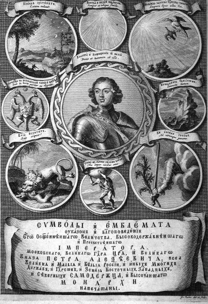

Rus amblem kitaplarının en meşhurlarından olan Simgeler ve Amblemler adlı bu eser 1705'te, Büyük Petro'nun emriyle yayımlanmıştı. Ağırlıklı olarak Daniel de La Feuille'ün Devises et Emblèmes adlı eserine (1691) dayanmaktadır. Kitabın kapağının ortasında Büyük Petro'nun portresi, solunda ise Çarlık Rusyası'nın sembolü olan çift başlı kartal yer alıyor.